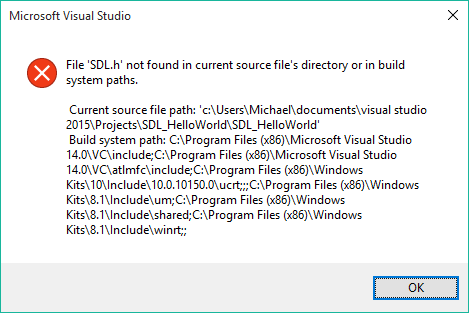
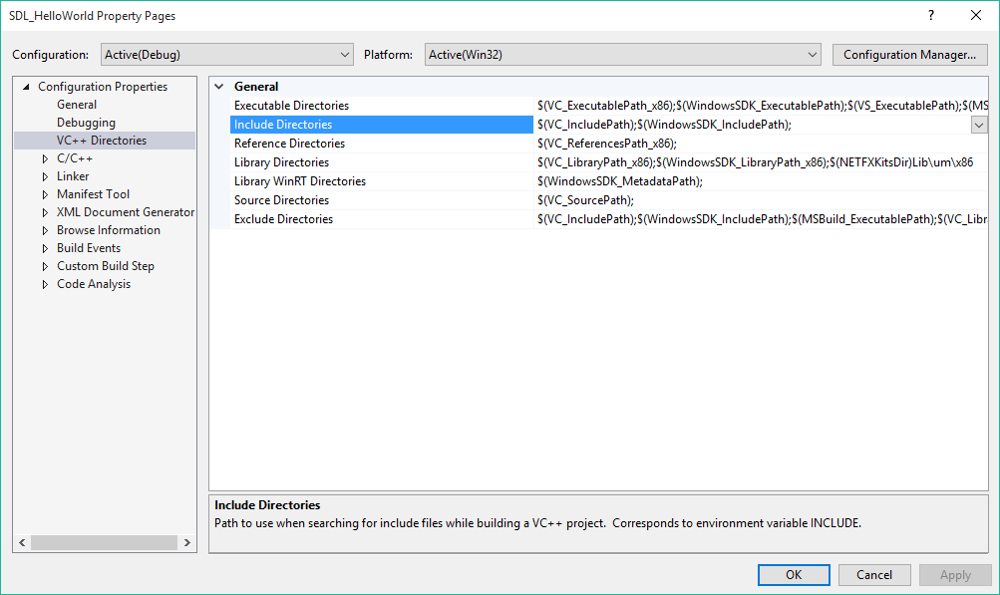
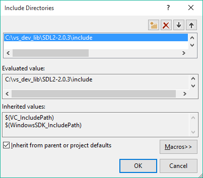
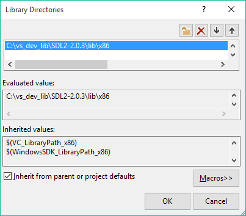
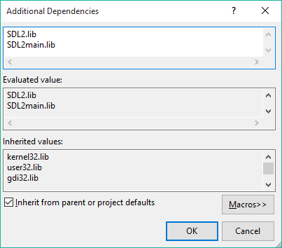
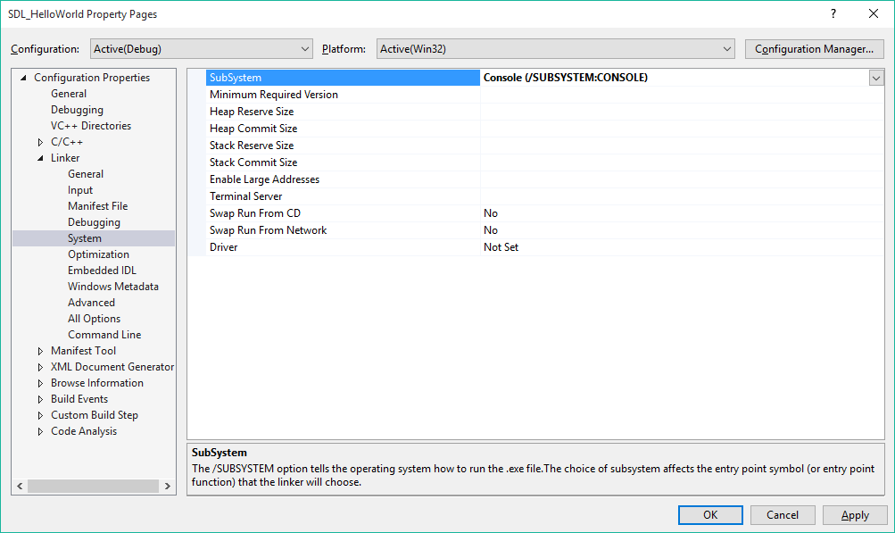
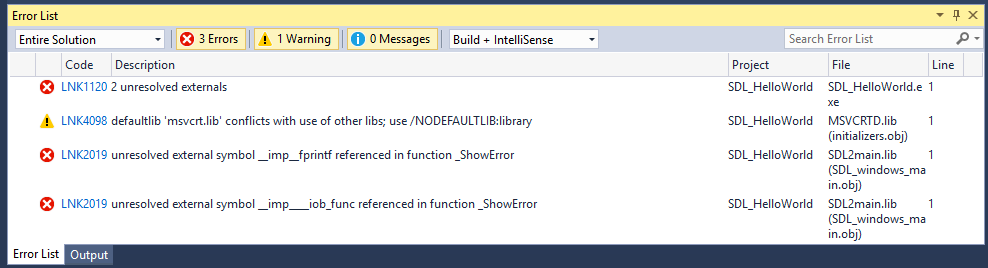
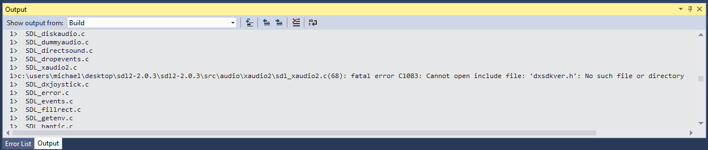
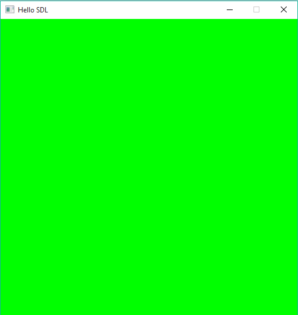
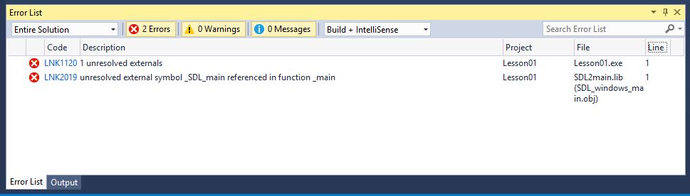

We'll be using the SDL library to handle input and graphics. If you already have SDL2 installed and configured, skip ahead to Step 3.
Windows: Configuring SDL2 with Visual Studio 2015 on Windows 10
1) Download the latest version of SDL2 from
http://libsdl.org/download-2.0.php.
I'll be using version 2.0.3. Make sure to click the download link under the "Development Libraries" header.
We want the Windows version for Visual C++. In my case, the link is listed as "SDL2-devel-2.0.3-VC.zip (Visual C++ 32/64-bit)".
Once this download completes, extract the archive. You should see a folder titled "SDL2-2.0.3" but corresponding to the version you downloaded.
Take this folder, and put it somewhere that is easy to find. In my case, I placed the folder in "C:\vs_dev_lib".
2) Open Visual Studio and create a new empty project. I called mine "SDL_HelloWorld", but you can name it whatever you'd like.
Add a new C++ file called Main.cpp and type the following single line of code:
#include <SDL.h>
Now right click on the word "SDL.h" and select "Open Document <SDL.h>" from the context menu. You should see the following:

Visual Studio can't find the header files that we just downloaded in the previous step. Let's fix this! Close the error message,
select "Project->SDL_HelloWorld Properties...", and then click on the "VC++ Directories" option in the left column. In the central pane,
find and click on the "Include Directories" row, as shown below.

Click on the small arrow to the far right of this row and then click on the word "Edit" that drops down. In the new dialog box, click
on the icon towards the upper-right that looks like the "New-Folder" icon. It should say "New Line" when you hover your mouse over it.
Click the browse button (it has three dots on it) on the right side of the dropdown, and browse to the SDL folder you previously
downloaded. You want to select the "include" directory from within the SDL2.2.0.3 folder. The result should look like the following:

Click "Ok" to return to the "SDL_HelloWorld Property Pages" window then click "Ok" again. Back in your code, again right-click on
the word "SDL.h" and select "Open Document <SDL.h>" from the context menu. This time, rather than getting an error, you should
see the "SDL.h" file open. Feel free to browse through the contents, but for now we don't need to understand what is going on.
3) Now we need to tell Visual Studio where to find the SDL2 library files. Like the last step, go to "Project->SDL_HelloWorld Properties...",
and then click on the "VC++ Directories" option in the left column. This time select "Library Directories" in the central pane.
Click on the small arrow to the far right of this row and then click on the word "Edit" that drops down. In the new dialog box, click
on the icon towards the upper-right that looks like the "New-Folder" icon. It should say "New Line" when you hover your mouse over it.
Click the browse button (it has three dots on it) on the right side of the dropdown, and browse to the SDL folder you previously
downloaded. This time you want to double-click on the "lib" folder and select the "x86" folder from inside it. (Note: Even if you have a
64-bit OS, as most people do, you still probably want to select the x86 folder.) The result should look like the following:

Click "Ok" to return to the Project Properties window.
4) We told Visual Studio how to find the SDL2 library files, but now we need to tell it to link against these files.
In the same project properties window that is still open from the previous step, click the arrow next to "Linker" in the right column.
Next select "Input" from the list of options under the "Linker" heading and select "Additional Dependencies" in the central pane.
Click on the small arrow to the far right of this row and then click on the word "Edit" that drops down. Now type in the words
"SDL2.lib" and "SDL2main.lib" on separate lines. The result should look like the following:

Click "Ok" to return to the Project Properties window.
5) Now we need to tell Visual Studio what type of application we want to create. In our case, we want console output, so we want to generate
a console application not a Windows application. In the same project properties window that is still open from the previous step,
click the arrow next to "Linker" in the right column. Next select "System" from the list of options under the "Linker" heading and
select "SubSystem" in the central pane. Click the small arrow to the far right of this row and then select "Console (/SUBSYSTEM:CONSOLE)"
from the list of options that drops down. The result should look like the following:

Click "Ok" to exit the Project Properties window.
6) Finally, we need to put the SDL2.dll file in a place where Visual Studio can find it. You can either put it in your project directory,
or you can put it in a special Windows folder. We'll do the former, so we don't clutter up the system files. Find the SDL2-2.0.3 folder from
earlier and go to "lib\x86". For me, the path is "C:\vs_dev_lib\SDL2-2.0.3\lib\x86". Copy the "SDL2.dll" file and paste it into the project
directory. In my case, this is "C:\Users\Michael\Documents\Visual Studio 2015\Projects\SDL_HelloWorld\SDL_HelloWorld". Your project directory
is the folder where the .vcxxproj file is.
7) After all of this, Visual Studio is finally ready to build and execute an SDL2 program! Let's write a super simple one and try to build it.
Enter the following:
#include <SDL.h>
int main(int argc, char* argv[])
{
return 0;
}
Hit F5, and... Error:(

Now, this is where many people would give up. We would conclude that we messed something up, and the cryptic error messages would scare us away.
We don't know how Visual Studio's Linker works, and all we want to do is get a simple graphical display working so we can emulate some
old hardware.
However, this time we aren't going to give up. So how do we start? Well, Google can sometimes be helpful, let's try that...
Google a few keywords and we get some helpful
looking links, like this page on
StackOverflow.
The first answer explains why this is happening. Visual Studio 2015 defines some C functions in a new way, and the SDL2 files we are using
were likely compiled using an older version of Visual Studio. Scrolling down, we see that the next answer suggests that we manually compile
the SDL2 sources using Visual Studio 2015, so let's do that.
-
Go to the same SDL2 download site that we used previously.
This time select the download under the "Source Code" heading. Unzip the folder once the download is complete.
-
Open up the "VisualC" directory in the "SDL2-2.0.3" folder and double-click on the "SDL_VS2013.sln" file.
If you get a warning about how this project could be potentially harmful, just click Ok/Next.
When asked if you'd like to upgrade the projects to use the current version of Visual Studio, click "Ok".
Wait while Visual Studio parses and scans all the files.
-
In the Solution Explorer window, right-click on the "SDL2" project and select "Build". and... Error #2 :(

Let's go back to Google
and again search for a few keywords. After some reading, I found this site
with clear instructions, but no explanataion. Double-click on the error in the Output pane in Visual Studio, and it takes you to line 68
in the file SDL_xaudio2.c. The comment above this line makes it sound like XAudio2 support is optional, so let's try commenting it out
and rebuilding the project. and... Success! Or at least it built successfully.
-
In the Solution Explorer window, right-click on the "SDL2main" project and select "Build". and... Sucess!
-
Ok, now we just need to get these newly generated files and copy them to the correct places. In the downloaded directory of source code,
copy "SDL2-2.0.3\VisualC\SDLmain\Win32\Debug\SDL2main.lib" to the "C:\vs_dev_lib\SDL2-2.0.3\lib\x86" directory and let it overwrite the
existing file. From "SDL2-2.0.3\VisualC\SDL\Win32\Debug\" copy both "SDL2.lib" and "SDL2.dll" to the same directory and let them
overwrite the existing files. Then coppy the "SDL2.dll" file to your project directory, in my case
"C:\Users\Michael\Documents\Visual Studio 2015\Projects\SDL_HelloWorld\SDL_HelloWorld".
After all that, open up your "SDL_HelloWorld" project in Visual Studio and try to build it again. and... Success!
8) Now that we can successfully build an SDL2 application with Visual Studio 2015, let's write a super basic program that actually
gets an SDL window on the screen. There are two main structures used in each SDL application. The
SDL_Window structure represents
the physical window that you see on your monitor. It holds information such as the window's size, position, etc. The
SDL_Renderer
structure is what you use to draw to the screen. Each renderer draws to one specific window.
There are a few functions that we'll always use. First,
int SDL_Init(Uint32 flags) initializes SDL. It will always be the first SDL
function we call, and for now we will call it using the "SDL_INIT_EVERYTHING" constant.
SDL_CreateWindow() creates and returns an
SDL window and likewise,
SDL_CreateRenderer() creates and returns an SDL renderer. We'll then use
SDL_RenderSetLogicalSize()
to set the resolution of the renderer. For now, we'll just set it to the same size as the window. Let's look at some basic code using these
functions. Keep in mind that most SDL functions return whether or not they were successful, so we should always be checking what was returned.
SDL also provides an
SDL_GetError() function to tell us what went wrong in the case of an error. Here's a basic program to get us started:
#include <SDL.h>
#include <iostream>
#define HEIGHT 500
#define WIDTH 500
#define POS_X 200
#define POS_Y 200
int main(int argc, char* argv[])
{
SDL_Window* window;
SDL_Renderer* renderer;
// Initialize SDL
if (SDL_Init(SDL_INIT_EVERYTHING) != 0) {
std::cout << "Failed to initialize SDL: " << SDL_GetError() << std::endl;
return -1;
}
// Create the window
window = SDL_CreateWindow("Hello SDL", POS_X, POS_Y, WIDTH, HEIGHT, 0);
if(window == NULL) {
std::cout << "Failed to create the window: " << SDL_GetError() << std::endl;
return -1;
}
// Create the renderer
renderer = SDL_CreateRenderer(window, -1, SDL_RENDERER_ACCELERATED);
if(renderer == NULL) {
std::cout << "Failed to create the renderer: " << SDL_GetError() << std::endl;
return -1;
}
// Set the renderer's size
if(SDL_RenderSetLogicalSize(renderer, WIDTH, HEIGHT) != 0) {
std::cout << "Failed to set the renderer's logical size: " << SDL_GetError() << std::endl;
}
return 0;
}
Now that we have initialized SDL and we have a window and renderer, let's draw something super simple to make sure it's all working.
First we need to tell the renderer what color to draw, we do this using the
SDL_SetRenderDrawColor() function. We want to simply
clear the screen to a given color, so next we'll use the
SDL_RenderClear() function. Finally, we need to tell the renderer to
actually display any of the drawing that we've done. To do so, we'll use the
SDL_RenderPresent() function. Finally, we'll delay
the program for a few seconds so the window will remain open and we can actually see what we've done. Finally, we need to remember to
call
SDL_Quit() before we exit our program. The following code does this:
#include <SDL.h>
#include <iostream>
#define HEIGHT 500
#define WIDTH 500
#define POS_X 200
#define POS_Y 200
int main(int argc, char* argv[])
{
SDL_Window* window;
SDL_Renderer* renderer;
// Initialize SDL
if (SDL_Init(SDL_INIT_EVERYTHING) != 0) {
std::cout << "Failed to initialize SDL: " << SDL_GetError() << std::endl;
return -1;
}
// Create the window
window = SDL_CreateWindow("Hello SDL", POS_X, POS_Y, WIDTH, HEIGHT, 0);
if(window == NULL) {
std::cout << "Failed to create the window: " << SDL_GetError() << std::endl;
return -1;
}
// Create the renderer
renderer = SDL_CreateRenderer(window, -1, SDL_RENDERER_ACCELERATED);
if(renderer == NULL) {
std::cout << "Failed to create the renderer: " << SDL_GetError() << std::endl;
return -1;
}
// Set the renderer's size
if(SDL_RenderSetLogicalSize(renderer, WIDTH, HEIGHT) != 0) {
std::cout << "Failed to set the renderer's logical size: " << SDL_GetError() << std::endl;
return -1;
}
// Set the color to Green
if(SDL_SetRenderDrawColor(renderer, 0, 255, 0, 255) != 0) {
std::cout << "Unable to set the renderer's draw color: " << SDL_GetError() << std::endl;
return -1;
}
// Clear the window (makes it all green)
if(SDL_RenderClear(renderer) != 0) {
std::cout << "Unable to clear the window: " << SDL_GetError() << std::endl;
return -1;
}
// Actually render the changes
SDL_RenderPresent(renderer);
// Delay so we can see the window
SDL_Delay(5000);
SDL_Quit();
return 0;
}
Press F5 to build, and you should see the following:

Success!! After all that work, we've managed to draw a green window on the screen. It may not seem like much, but we've overcome several
roadblocks and are now ready to start work on our actual emulator.
Common Problems:
-
If you continue to get linker errors, first go back and double check that you have set up your project correctly and placed the
SDL2.dll in the correct location. If you're confident that everything is correctly configured, next make sure that you have defined
"main" in the standard way:
int main(int argc, char* argv[])
If you have different parameters to your main function, you'll get the following linker error:
